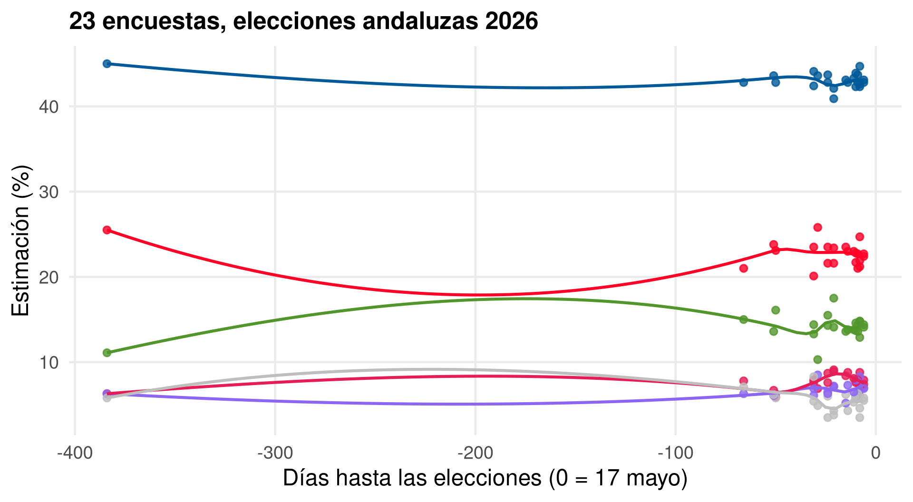
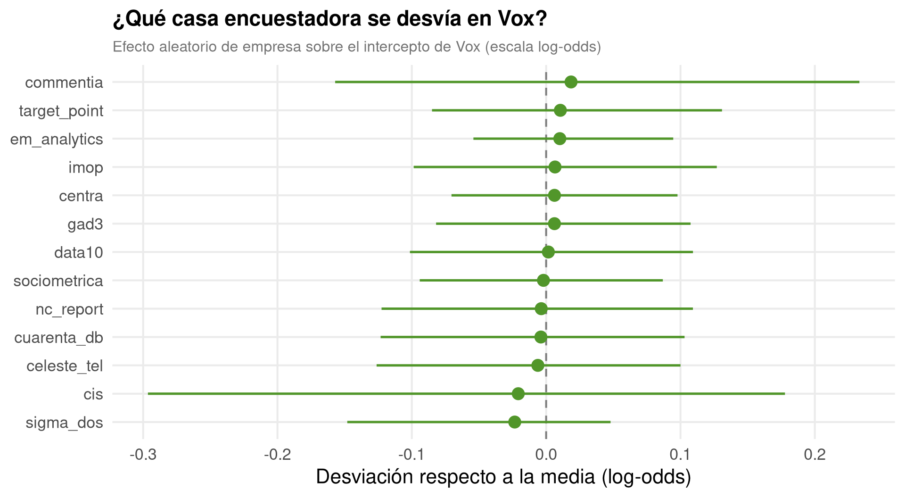
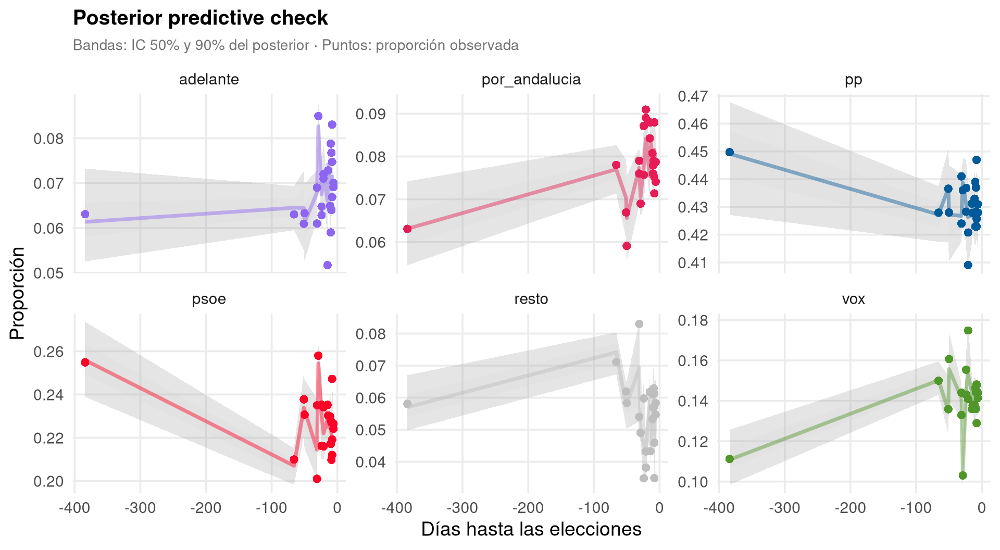
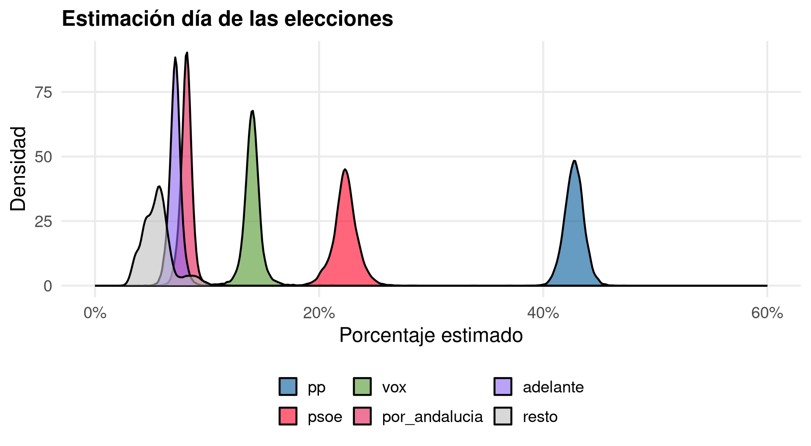
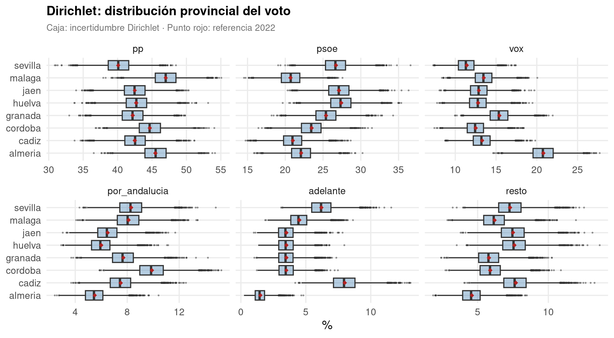
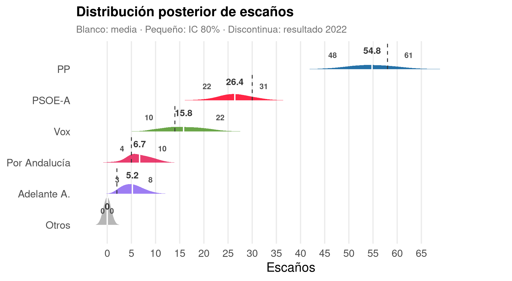
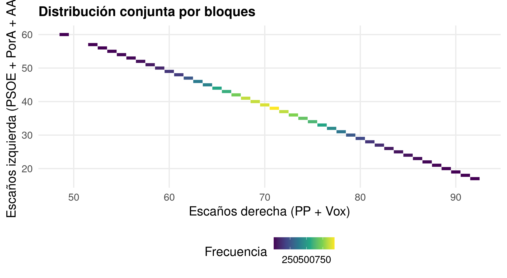
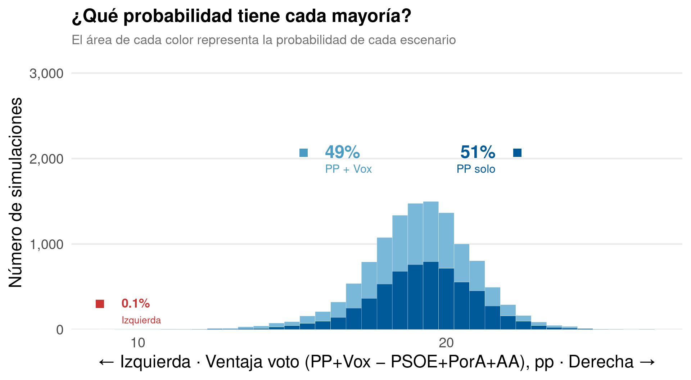
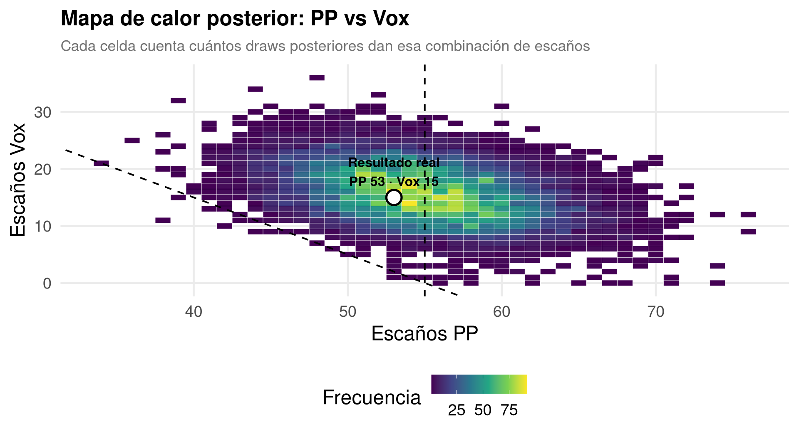

Un flujo de trabajo bayesiano en R para la agregación electoral e incertidumbre provincial
2026-01-01
Las encuestas dan porcentajes. El Parlamento de Andalucía reparte escaños.
La pregunta real no es “¿qué % saca el PP?”, es “¿qué probabilidad tiene cada reparto posible de escaños?”
“El PP rozará la mayoría absoluta”
Un titular así esconde una distribución entera de escenarios posibles.
Con un enfoque bayesiano no perseguimos el número que más se acerque, perseguimos la distribución de plausibilidad completa — y con ella, la probabilidad de cada mayoría.
Encuestas (23, distintas empresas)
⬇
Meta-análisis bayesiano → posterior regional
⬇ + error histórico de las encuestas
Posterior ajustado
⬇ + reparto provincial (Dirichlet)
Posterior provincial
⬇ D’Hondt, provincia a provincia
Distribución posterior de escaños
resto: complemento a 100 de los 5 partidos principales
Figura 1
Modelo multinomial bayesiano con brms: cada encuesta aporta un vector de votos por partido.
cell_counts | trials(n): composición multinomial (los 6 partidos suman n)(time | empresa): cada casa encuestadora tiene su propio intercepto y tendenciatime: días hasta las elecciones, recoge la evolución temporal(Opcional — solo si sobra tiempo)
Los priors por defecto de brms en multinomial son impropios (flat): no se puede muestrear solo del prior. Sustituimos por priors propios, débilmente informativos en escala log-odds.
Normal(0, 2) en log-odds cubre de sobra el rango 0-100% de voto; Exponential(1) restringe las desviaciones a positivas con cola moderada.
(Opcional — solo si sobra tiempo)
| param | Estimate | Rhat | Bulk_ESS |
|---|---|---|---|
| mupsoe_Intercept | -0.650 | 1.000 | 9259.035 |
| muvox_Intercept | -1.116 | 1.001 | 8889.662 |
| muporandalucia_Intercept | -1.658 | 1.000 | 9144.901 |
| muadelante_Intercept | -1.788 | 1.000 | 9805.963 |
| muresto_Intercept | -2.066 | 1.001 | 3704.953 |
19 de 12000 transiciones divergentes (0.15%) — el resto de diagnósticos (interceptos por partido; las pendientes _time son igual de limpias), Rhat ≈ 1, ESS > 3700.
(Opcional — solo si sobra tiempo)
¿Qué casa encuestadora se desvía sistemáticamente, y hacia dónde?

pp_check() no está implementado para la familia multinomial: lo hacemos a mano, comparando proporciones predichas vs. observadas por encuesta.

Tratamos las elecciones como una “nueva encuesta” con time = 0 y empresa desconocida.

| Partido | Media | IC 90% |
|---|---|---|
| pp | 42.8 | 41.3–44.2 |
| psoe | 22.3 | 20.5–24.1 |
| vox | 14.0 | 12.9–15.2 |
| por_andalucia | 8.2 | 7.3–8.9 |
| adelante | 7.2 | 6.3–8.0 |
| resto | 5.6 | 3.6–8.4 |
…y aquí empieza lo interesante.
Cuando se sobreestima al PP normalmente se infraestima a Vox (trasvase de voto útil): ρ(PP, Vox) ≈ −0.5.
El bloque de izquierda falla o acierta en bloque: ρ(PSOE, Por Andalucía) ≈ +0.5.
Matriz de correlación fijada a criterio experto — con solo 2-3 elecciones con datos completos (2022, 2018) no hay muestra suficiente para estimarla.
Añadimos al posterior un error extraído de una normal multivariante con esa matriz de correlación:
Las encuestas dan % regional. D’Hondt se aplica por provincia. Hipótesis de trabajo: el reparto territorial de 2026 se parece al de 2022.
Ejemplo — Almería: Vox sacó allí el doble que su media regional en 2022. Asumimos que ese diferencial se mantiene, pero lo perturbamos con incertidumbre.
% provincia = % regional × (ratio provincia 2022 / media regional 2022)
perturbado con una Dirichlet
sim_escanos_draw() paso a paso(Opcional — solo si sobra tiempo) · Ejemplo de juguete: 2 partidos, 2 provincias.
A B
0.619 0.381 En Norte, A pasa de 52% regional a 61.9% provincial: el ratio 2022 (60/50) amplifica el resultado regional en su feudo.
(Opcional — solo si sobra tiempo)
12000 draws × 8 provincias = 96000 repartos D’Hondt.
Con furrr en paralelo, unos segundos en un portátil normal.

dhondt <- function(votos, escanos, threshold = 0.03) {
votos[votos / sum(votos) < threshold] <- 0 # barrera del 3%
resultado <- setNames(integer(length(votos)), names(votos))
for (i in seq_len(escanos)) {
ganador <- which.max(votos / (resultado + 1))
resultado[ganador] <- resultado[ganador] + 1L
}
resultado
}Cociente votos / (escaños_ya_asignados + 1): el partido con el cociente más alto se lleva el escaño, ronda a ronda.

(Opcional — solo si sobra tiempo)


(Opcional — solo si sobra tiempo)
Las encuestas daban a Por Andalucía por delante. Pero la incertidumbre provincial deja una probabilidad nada desdeñable de sorpaso:
P(Adelante > Por Andalucía) = 24.0%

No acerté el número exacto — acerté la región de plausibilidad.
Según Virgilio Gómez Rubio: lo correcto sería meter todas las fuentes de incertidumbre en un único modelo bayesiano, y sumar el error histórico en escala logit en vez de aditivamente en proporciones.
Gracias
github.com/joscani/bayesian-metaanalisis
Posts originales en Muestrear no es pecado: Meta-análisis de encuestas · Escaños, Bayesian way